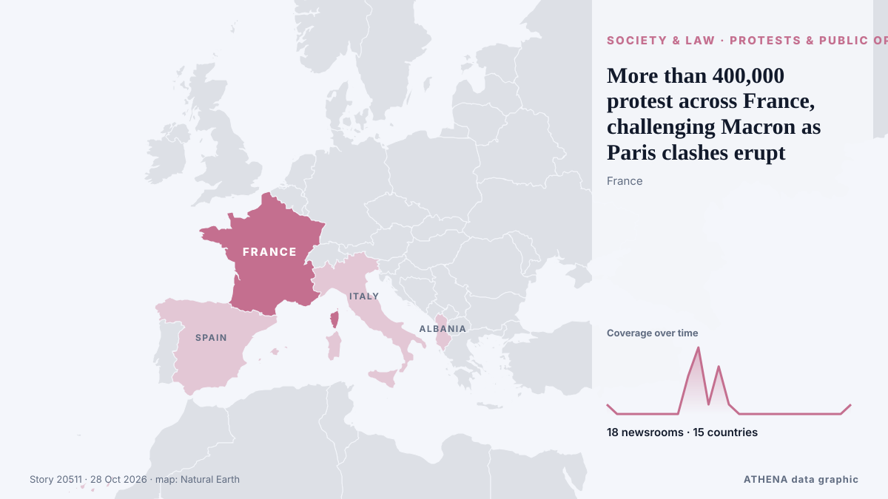

More than 400,000 protest across France, challenging Macron as Paris clashes erupt

Clashes erupted in Paris as a mass march drew to a close Saturday, with more than 400,000 people rallying across France over school funding and soaring living costs in a fresh challenge to President… von PBS NewsHour
Unabhängig gemeldet von 18 Medien in 15 Ländern seit dem 22. Okt., zuerst von The Independent; die Berichterstattung flaut ab. ATHENA stuft das Risiko als erhöht ein (5.5/10), vor allem wegen der Schwere des beschriebenen Schadens und seiner geografischen und sektoralen Reichweite. Die Konfidenz liegt bei 89 % (hoch): 18 Medien bestätigen es unabhängig, bei einer mittleren Verlässlichkeit der Quellen von 76 %.
Warum es wichtig ist: Rechtliche und politische Änderungen verändern Rechte, Pflichten und öffentliche Leistungen für die Betroffenen.
Was sich geändert hat: 1 neuer Bericht in den 24 Stunden bis 28. Okt..
Erste Schlagzeile: Clashes erupt between protesters and police in France
Schlagzeilen werden auf Englisch angezeigt, wie veröffentlicht.
Auf einen Blick
Ausgewählt, bewertet und geschrieben nach der veröffentlichten Methodik von ATHENA. Kein Redakteur greift in einzelne Ereignisse ein. So entsteht ATHENA ›
| 22 Oct 10:06 UTC | 1 |
|---|---|
| 22 Oct 16:06 UTC | 0 |
| 22 Oct 22:06 UTC | 0 |
| 23 Oct 04:06 UTC | 0 |
| 23 Oct 10:06 UTC | 0 |
| 23 Oct 16:06 UTC | 0 |
| 23 Oct 22:06 UTC | 0 |
| 24 Oct 04:06 UTC | 0 |
| 24 Oct 10:06 UTC | 4 |
| 24 Oct 16:06 UTC | 7 |
| 24 Oct 22:06 UTC | 1 |
| 25 Oct 04:06 UTC | 5 |
| 25 Oct 10:06 UTC | 1 |
| 25 Oct 16:06 UTC | 0 |
| 25 Oct 22:06 UTC | 0 |
| 26 Oct 04:06 UTC | 0 |
| 26 Oct 10:06 UTC | 0 |
| 26 Oct 16:06 UTC | 0 |
| 26 Oct 22:06 UTC | 0 |
| 27 Oct 04:06 UTC | 0 |
| 27 Oct 10:06 UTC | 0 |
| 27 Oct 16:06 UTC | 0 |
| 27 Oct 22:06 UTC | 0 |
| 28 Oct 04:06 UTC | 0 |
| 28 Oct 10:06 UTC | 1 |
| 22 Oct 10:15 UTC | 3.9 |
|---|---|
| 23 Oct 16:57 UTC | 4.5 |
| 28 Oct 14:32 UTC | 5.5 |
Warum diese Zahlen
Bedeutung
Risiko
Konfidenz
Die Berichterstattung – wer berichtete, und wann
Schlagzeile wie veröffentlicht · öffnet das Original- The Independent · Vereinigtes Königreich · United KingdomViolent clashes erupt between Spanish police and anti-fascist protesters days after France riots
- APA (English) · Aserbaidschan · AzerbaijanClashes erupt between protesters and police in France - UPDATED
- Fortune · Vereinigte Staaten · United StatesIt’s not just France — Protesters are marching across Europe as part of the newly formed ‘Oct. 17 Movement’
- ProtoThema English ·Over 1000 arrests, hundreds injured in violent protests across France, as riots rage on in Spain and Albania
- The Independent · Vereinigtes Königreich · United KingdomFrance protests latest: 135 arrested and tear gas fired at demonstrators as unrest erupts
- PBS NewsHour · Vereinigte Staaten · United StatesMore than 400,000 protest across France, challenging Macron as Paris clashes erupt
- NDTV · Indien · IndiaOver 400,000 March Across France, Clashes Erupt In Paris
- France 24 English · Frankreich · FranceFrance: Clashes erupt as protests sweep across cities
- CNA (Channel NewsAsia) · Singapur · SingaporeFresh clashes rock France as protesters march on
- SBS News · Australien · AustraliaNearly 1,000 arrested as fresh clashes erupt across France
- The New York Times (World) · Vereinigte Staaten · United StatesUnrest Erupts Again in France, but This Time, With Less Property Damage
- RTÉ News · Irland · IrelandOver 1,300 people arrested during protests in France
- The Daily Star — page reader · Bangladesch · BangladeshFresh clashes rock France as protesters march on
- The Korea Times · Südkorea · South KoreaMore than 400,000 protest across France, challenging Macron as Paris clashes erupt
- Al Jazeera English · Katar · QatarPhotos: Clashes erupt in France during protests over rising living costs
- ProtoThema English ·Europe up in arms: Nearly 1,000 arrested in France, violent clashes in Albania and Spain, as protesters storm Colosseum
- Mainichi (English) · JapanMore than 400,000 protest across France, challenging Macron as Paris clashes erupt
- Kyiv Post · UkraineFresh Clashes Rock France as Protesters March On
- to vima · Griechenland · GreeceClashes Erupt in Thessaloniki as Police Block Protesters